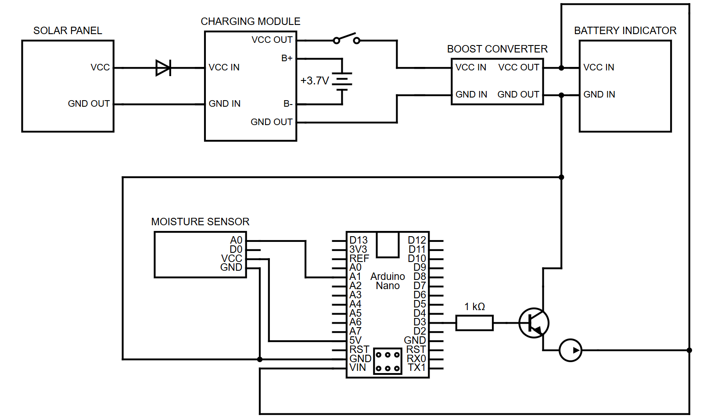

Abstract
The Automated Watering System is a smart irrigation solution that uses sensors and microcontrollers to monitor soil moisture and water plants automatically. This system conserves water while ensuring optimal plant growth, making it perfect for home gardens and agriculture.
Working Principle
The system consists of soil moisture sensors, an Arduino Nano microcontroller, and a submersible pump. When the soil moisture drops below a set threshold, the microcontroller activates the pump to water the plants. Once the soil reaches optimal moisture, the system stops watering, ensuring efficient water use.
Block Diagram
Circuit Diagram
Hardware Components
- Arduino Nano: Microcontroller that processes sensor data and controls the pump.
- Soil Moisture Sensor: Measures soil water levels and sends data to the Arduino.
- Submersible Pump: Delivers water to plants when activated.
- Power Supply (3.7V, 3000mAh): Provides energy to the system.
- Solar Panel: Captures sunlight and charges the battery.
- Transistor (TIP31C): Controls power flow to the pump.
- Resistor (1kΩ): Limits current to protect components.
- Capacitor (25V, 220μF): Helps smooth out voltage fluctuations.
Software Used
- Arduino IDE: Used for writing and uploading code.
- C/C++ Programming: Defines pump control and sensor logic.
- Moisture Level Threshold: Predefined value that triggers the pump.
- Pump Control Logic: Controls when the pump turns on and off.
Advantages
- Water Conservation
- Time-Saving & Low Maintenance
- Energy Efficient
- Eco-Friendly & Cost-Effective
Applications
- Urban Farming
- Parks and Landscaping
- Indoor Plant Care
- Community Gardens
Cost Estimation
The estimated cost of the project is Rs.4999.
Conclusion
The Automated Watering System for Plants is an efficient and self-sustaining irrigation solution. By integrating sensors, a microcontroller, and a solar-powered battery, this system ensures plant health while conserving water and minimizing human effort.